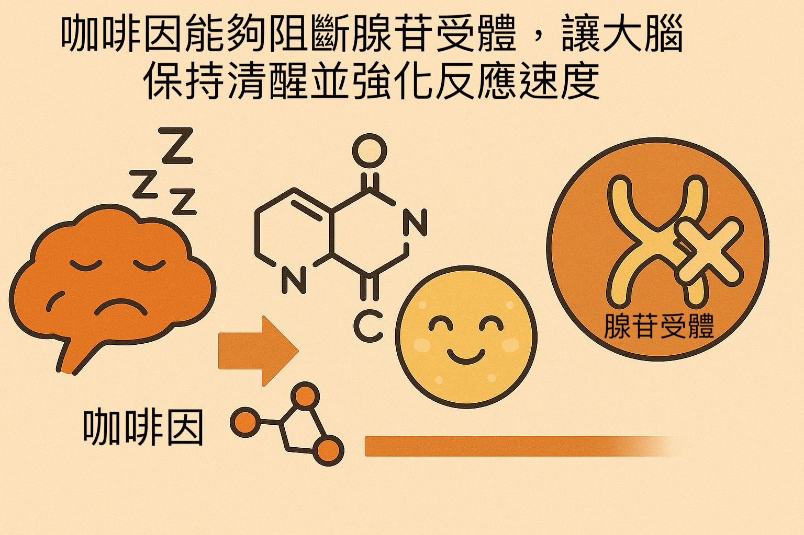
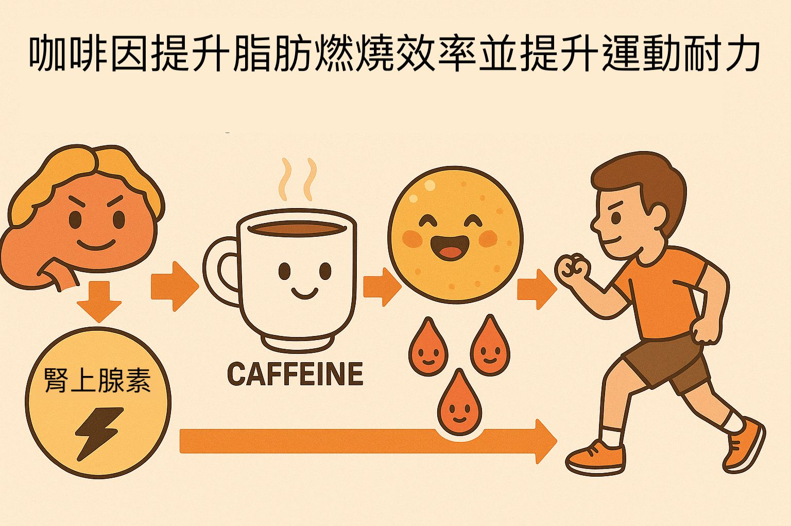
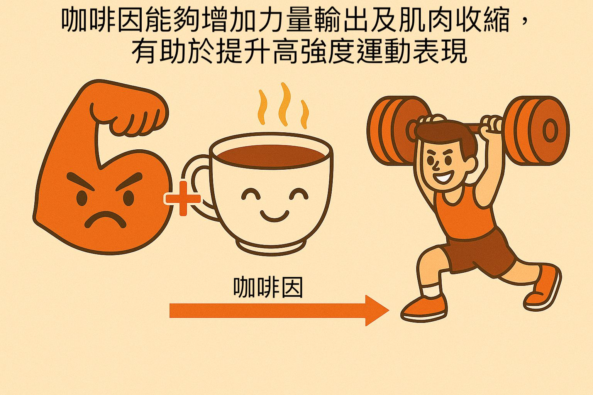

咖啡因在運動中的應用與重要性
撰文／PulsarPump 科學團隊
最後更新／2025年3月30日
運動中的咖啡因作用
咖啡因是全球最常用的中樞神經刺激劑，能在運動中提高專注力、延緩疲勞感並增強肌肉力量與耐力， 成為高強度間歇及長時間耐力運動中的重要輔助工具。
主要效益
- 增強肌肉力量與耐力： 適用於舉重、短跑等短時間高強度運動，可提高力量與爆發力。
- 提升有氧耐力： 增加脂肪氧化並延遲疲勞，是馬拉松等耐力運動的理想輔助。
- 改善專注與反應： 阻斷腺苷受體，促進去甲腎上腺素與多巴胺分泌，維持警覺與迅速反應。
- 降低疲勞感： 減少運動中對用力的感知，支持更高強度訓練。
科學證據支持
國際奧委會(IOC)、國際運動營養學會(ISSN)及美國運動醫學會(ACSM)均證實， 每公斤體重攝取 3-6 毫克咖啡因可在短時間內提升運動表現，眾多隨機對照試驗與系統性回顧支持其應用效益。
作用機制
- 阻斷腺苷受體： 減少中樞神經抑制作用，提升大腦警覺性與反應速度。
- 促進脂肪氧化： 增強脂肪酸動員，節省肌糖原供能。
- 增強肌肉收縮： 可能透過調節鈣離子釋放與磷酸二酯酶(PDE)活性，提高局部血流與肌肉收縮力。
咖啡因來源與產品應用
市場上的咖啡因主要來自無水咖啡因與瓜拿納萃取物。無水咖啡因起效迅速，瓜拿納萃取物則較為平穩， 可根據運動需求選擇不同產品。
圖解：咖啡因如何影響神經系統
咖啡因能阻斷腺苷受體，使大腦保持清醒並提升反應速度，是其提神效果的主要機制之一。
圖解：咖啡因如何促進脂肪氧化
透過提升腎上腺素與促進脂肪酸動員，咖啡因可增加脂肪燃燒，是耐力運動常用的輔助方式。
圖解：咖啡因在高強度運動中的效益
咖啡因有助於提升爆發力與肌肉收縮強度，對短時間高強度運動表現有正向幫助。
使用建議與劑量
根據運動類型，推薦以下攝取量：
- 高強度間歇運動： 每公斤體重約4-6毫克。
- 耐力運動： 每公斤體重約3-4毫克。
初次使用者建議先從較低劑量開始，根據個人體質逐步調整。
參考文獻
參考國際奧委會(IOC)、國際運動營養學會(ISSN)及美國運動醫學會(ACSM)的建議， 並結合眾多隨機對照試驗與系統性回顧研究成果。